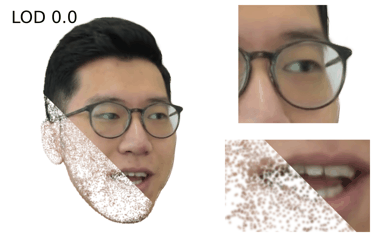
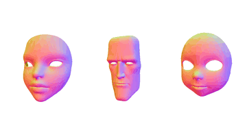
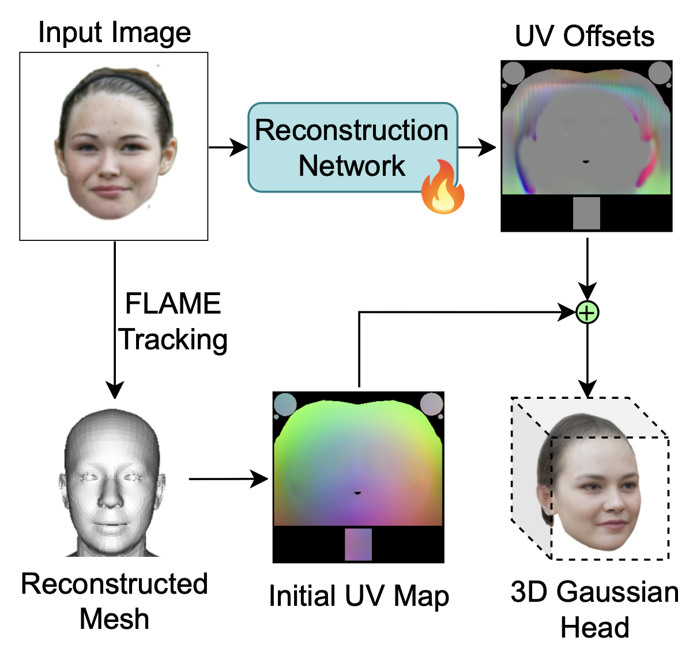
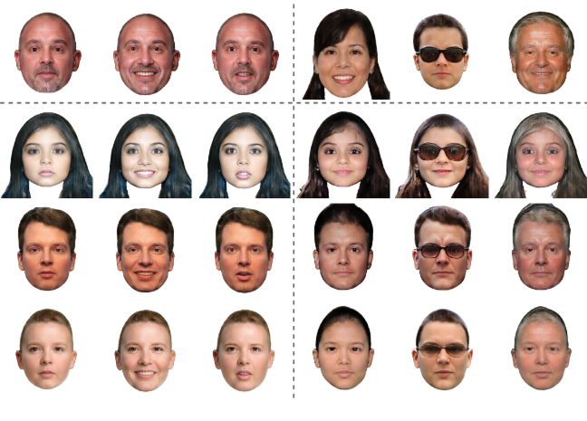
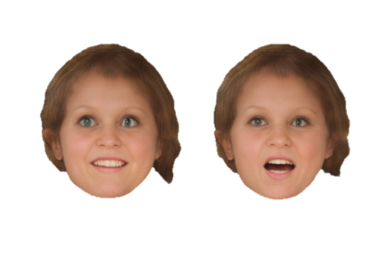
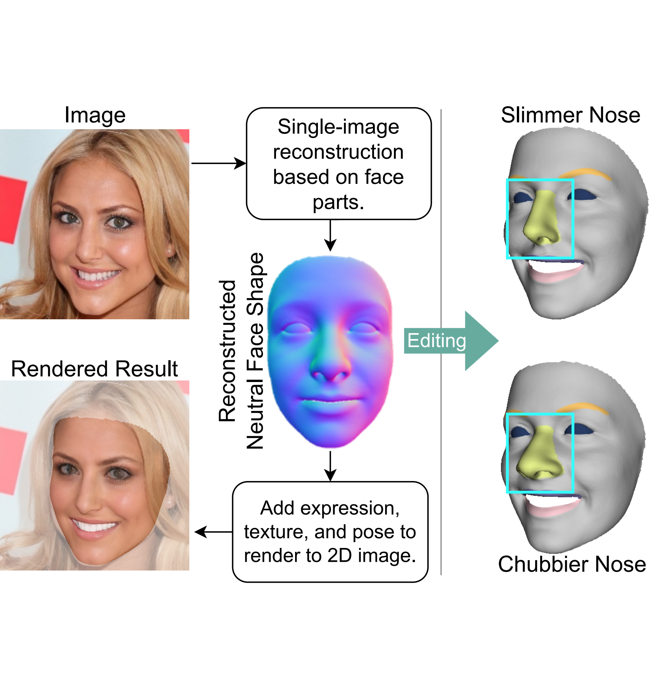
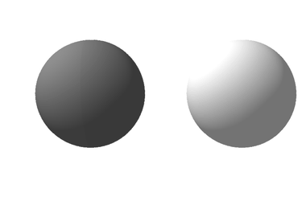
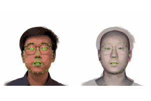

ArchitectHead
IEEE/CVF Winter Conference on Applications of Computer Vision (WACV), 2026
Continuous level-of-detail (LOD) control for 3DGS head avatars.
Ph.D. in Computer Engineering, The University of British Columbia
The 80th-generation direct descendant of Yanzi (c. 521–481 BC), philosopher.
Recipient of the Governor General’s Gold Medal (Canada) and the Vector Scholarship in Artificial Intelligence (Toronto Vector Institute).
See Google Scholar for a full list.

ArchitectHead
IEEE/CVF Winter Conference on Applications of Computer Vision (WACV), 2026
Continuous level-of-detail (LOD) control for 3DGS head avatars.

Neural 3D Face Stylization
IEEE Transactions on Visualization and Computer Graphics (TVCG), 2025
A neural network-based mesh deformation transfer method for learning 3D face stylization in a weakly supervised manner.

Gaussian Deja-vu
IEEE/CVF Winter Conference on Applications of Computer Vision (WACV), 2025 Oral
A 3DGS-based head avatar creation method that accelerates training for personalized avatars and enhances their photorealistic quality.

StyleMorpheus
Neurocomputing, 2025
A style-based neural morphable face model trained on in-the-wild images, enabling photorealistic 3D face synthesis and editing.

HeadNeRF+
IEEE International Conference on Image Processing (ICIP), 2023
A 3D-aware face reconstruction learning framework tailored for HeadNeRF.

NEO-3DF: Novel Editing-Oriented 3D Face Creation and Reconstruction
Asian Conference on Computer Vision (ACCV), 2022

GMesh
A lightweight differentiable renderer for scenes that mix triangle meshes and 3D Gaussian splats.

FLAME Head Tracker
FLAME head tracking from images and videos, used in ArchitectHead and Gaussian Deja-vu.